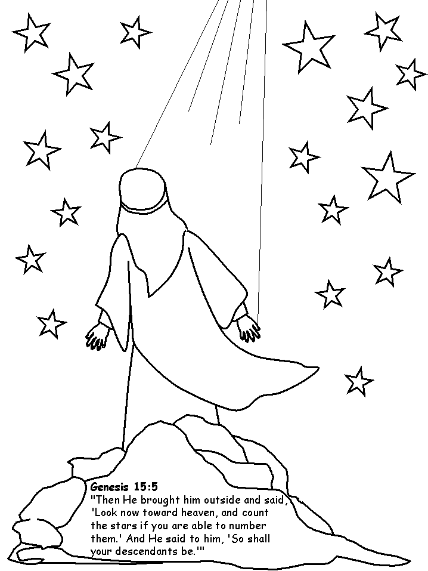
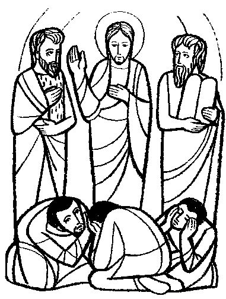

This week's lessons: Genesis 12:1-4a , Psalm 121 , Romans 4:1-5, 13-17 , John 3:1-17 or Matthew 17:1-9
This
week's lessons: Genesis
12:1-4a , Psalm
121 , Romans
4:1-5, 13-17 , John
3:1-17 or Matthew
17:1-9

picture found at: http://www.coloring.ws/about_us.htm

Misioneros Del Sagrado CorazÃon en el Peru,
Next week's lessons: Exodus 17:1-7 , Psalm 95 , Romans 5:1-11 , John 4:5-42